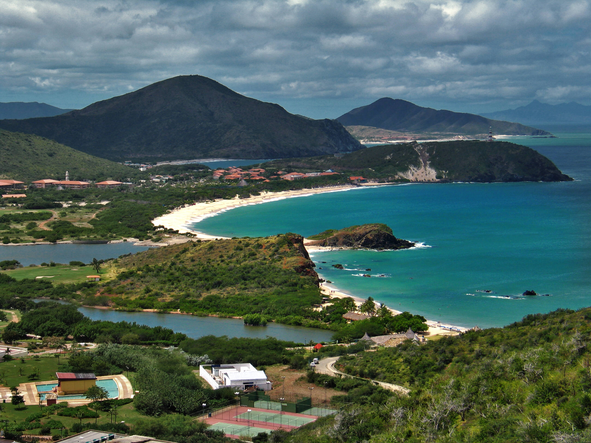
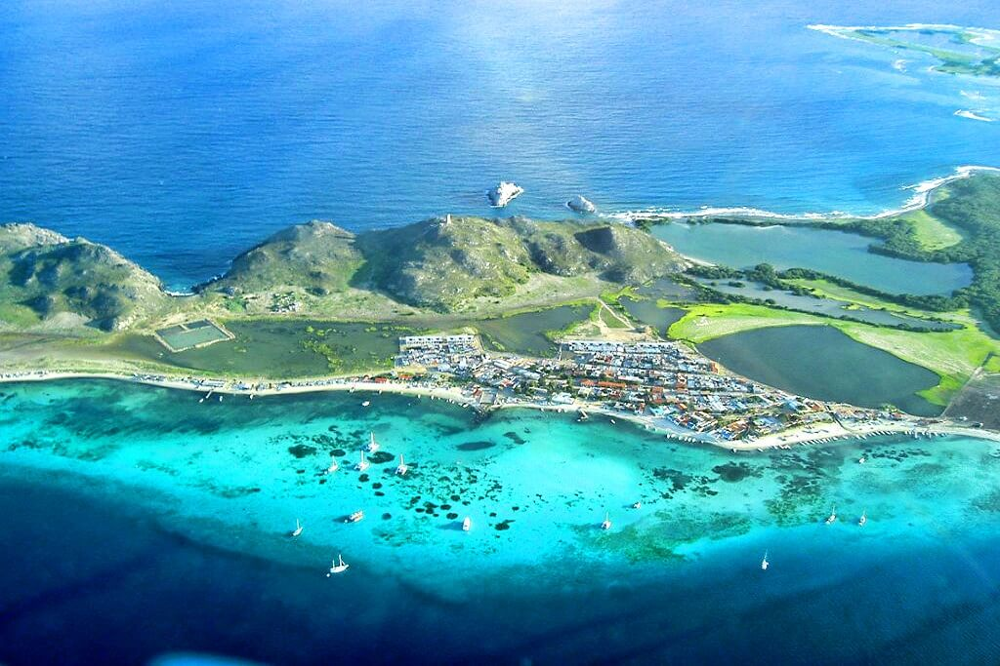
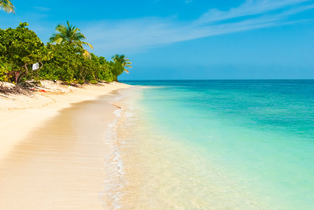
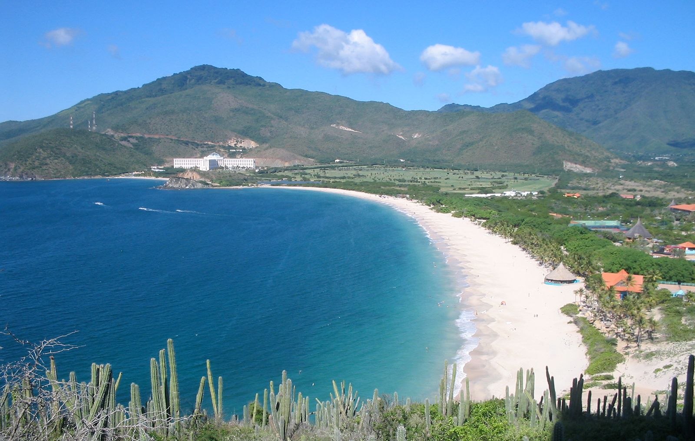
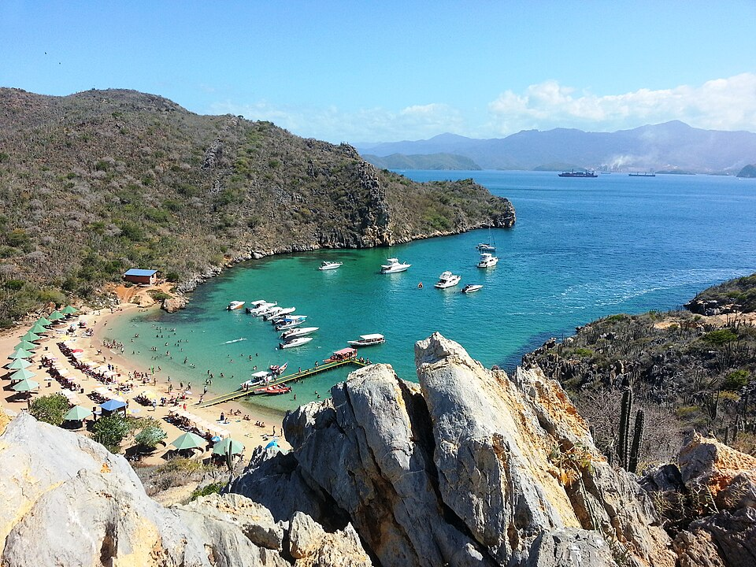

VENEZUELA'S COASTAL & MARINE LANDSCAPES
Venezuela stretches across more than 2,800 kilometers of Caribbean coastline — one of the longest and most diverse in all of South America. From pristine coral archipelagos accessible only by small aircraft, to mangrove-fringed national parks, volcanic black sand coves, and Caribbean islands that rival the Maldives for sheer beauty, Venezuela's coastal and marine landscape is one of the great undiscovered treasures of the Western Hemisphere.

-
LOS ROQUES ARCHIPELAGO

-
MORROCOY NATIONAL PARK

-
MARGARITA ISLAND

-
MOCHIMA NATIONAL PARK

Los Roques Archipelago National Park — a protected chain of approximately 350 coral islands, cays, and islets sitting 128 kilometers north of Caracas — is widely regarded as one of the most pristine marine destinations in the entire Western Hemisphere. Declared a national park in 1972, it protects 1,500 square kilometers of coral reef, making it the largest marine national park in the Caribbean. The water clarity regularly exceeds 30 meters, the beaches of Cayo de Agua and Madrisquí are powdery white and impossibly clean, and the reef life — sea turtles, manta rays, nurse sharks, snappers, barracudas, and hundreds of species of tropical fish — is extraordinary. Access is by a short 40-minute flight from Caracas to Gran Roque island, and day trips to the surrounding cays are operated daily by local boat captains who know every sandbar and reef in the archipelago. Morrocoy National Park on the central western coast is a different but equally spectacular experience — a labyrinth of 30 mangrove-fringed islands, coral cays, and crystal-clear lagoons accessible by boat from the gateway towns of Tucacas and Chichiriviche. Cayo Sombrero and Cayo Muerto are the most celebrated of the park's cays, with wide palm-lined beaches, excellent snorkeling directly off the beach, and a relaxed, unhurried atmosphere that makes it easy to spend an entire day doing nothing but swimming and eating freshly caught fish. Margarita Island — Venezuela's largest and most visited Caribbean island — brings together golden beaches, warm clear waters, vibrant nightlife, duty-free shopping, and an island culture shaped by centuries of pearl fishing. Playa El Agua on the island's north coast is the most celebrated beach, a long palm-fringed stretch of warm Caribbean water beloved by locals and tourists alike. Mochima National Park near Cumaná on the eastern coast completes Venezuela's coastal quartet — a dramatic landscape of rocky headlands, hidden coves, and turquoise bays where dolphins regularly accompany boat trips between the park's pristine islands. Together these destinations form a coastal tourism offering that is genuinely world-class, and that remains remarkably undiscovered by the wider world.